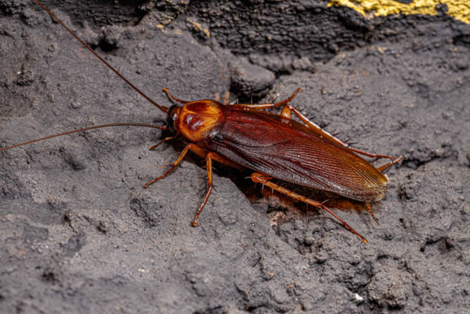

Es un insecto de cuerpo aplanado y ovalado, de color marrón rojizo, con antenas largas y patas adaptadas para correr rápidamente. Presenta alas bien desarrolladas en ambos sexos y puede alcanzar tamaños relativamente grandes. Habita principalmente en ambientes cálidos y húmedos, como alcantarillas, sótanos y zonas de almacenamiento. Tiene hábitos omnívoros y se alimenta de diversos materiales orgánicos.